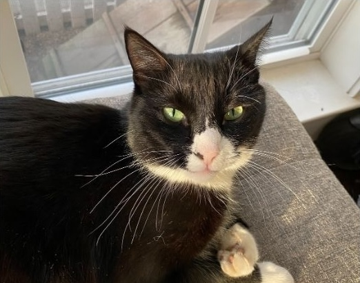

Duke the Cat
Top-Tier Feline Security Agent | Professional Secret Service Operative

Skills
- Stealth & Surveillance: Expert in silent paw patrols and midnight reconnaissance.
- Protective Services: Skilled at guarding humans, valuables, and unattended snacks.
- Crisis Response: Lightning-fast reflexes in intercepting toy mice, intruders, and laser dots.
- Communication: Subtle coded meows, tail flicks, and ear rotations for tactical signaling.
- Physical Fitness: Daily training in climbing curtains, leaping onto high ground, and tactical sprints at 3 AM.
- Professional Demeanor: Maintains calm under pressure, always landing on all four feet.
Education
Feline Academy of Secret Service (FASS)
- Major: Covert Operations & Counter-Espionage
- Minor: Advanced Nap Strategies
- Honors: Purrfect Attendance Award, Top of the Scratching Post
MeowQuantico Training Facility
- Certified in Stealth Prowl Tactics, Tail-to-Tail Combat, and Disguise Techniques (cardboard box specialization).
Experience
Special Agent, Feline Secret Service, Classified Location | 2018 – Present
- Conducted undercover operations inside cardboard forts and laundry baskets.
- Protected human assets from dangerous strings, bugs, and suspicious vacuum cleaners.
- Carried out advanced counter-espionage missions against the neighborhood squirrel syndicate.
- Awarded Medal of Honorary Tuna for bravery during a red dot pursuit.
Lead Security Officer, Household Division, Domestic Territory | 2016 – 2018
- Maintained 24/7 perimeter control of all windowsills and doorways.
- Neutralized threats such as invading moths and unauthorized delivery personnel.
- Coordinated nightly briefings (via meowing) to ensure humans remained alert.
- Implemented Operation Lap Guard: consistent emotional support during classified cuddle missions.
Fun Facts
- Can nap for 16 hours a day and still be mission-ready at a moment’s notice.
- Once infiltrated a laser pointer cartel and brought peace to the living room.
- Known for impeccable fashion sense — always wears a sleek black tuxedo coat.
- Has never lost a tail chase, even against his own.
- Believes tuna is the true fuel of elite agents.
- Can convert $ to € in record speed.